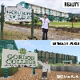
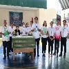

GORDON COLLEGE MINECRAFT
October 10, 2022
A virtual version of a school in Olongapo City, Gordon College, using the game Minecraft. This was done by a student-youtuber, Tyrone Elizalde, who came from the said school. It shows the whole area where the building itself, the swimming pool, another school, health center and an oval track can be seen here.
Watch VideoAPERTURA 2022
August 15, 2022

Apertura 2022 with a theme: "𝑷𝒂𝒈𝒍𝒂𝒍𝒂𝒚𝒂𝒈: 𝑮𝒐𝒓𝒅𝒐𝒏 𝑪𝒐𝒍𝒍𝒆𝒈𝒆 𝑩𝒖𝒊𝒍𝒅𝒊𝒏𝒈 𝑩𝒓𝒊𝒅𝒈𝒆𝒔 𝑻𝒐𝒘𝒂𝒓𝒅𝒔 𝒂 𝑩𝒆𝒕𝒕𝒆𝒓 𝑵𝒐𝒓𝒎𝒂𝒍". Aims to welcome the freshman as well as upperclassmen back to Gordon College after years of virtual classes.
Watch VideoSIKLAB 2022
October 23, 2022
Excitement gathers in Rizal Triangle as Gordon College holds the opening day for Sportsfest with the theme "𝑺𝑰𝑲𝑳𝑨𝑩 2022: 𝑩𝒖𝒊𝒍𝒅𝒊𝒏𝒈 𝒃𝒓𝒊𝒅𝒈𝒆𝒔 𝒐𝒇 𝒂𝒅𝒗𝒆𝒓𝒔𝒊𝒕𝒚, 𝑭𝒐𝒔𝒕𝒆𝒓𝒊𝒏𝒈 𝒖𝒏𝒊𝒕𝒚 𝒕𝒉𝒓𝒖 𝑬𝒙𝒄𝒆𝒍𝒍𝒆𝒏𝒄𝒆 𝒊𝒏 𝑺𝒑𝒐𝒓𝒕𝒔".
Watch VideoYUGTO 2023
February 20, 2023
As we celebrate Gordon College's 24th Founding Anniversary with the theme, "𝒀𝑼𝑮𝑻𝑶: 𝑻𝒓𝒂𝒏𝒔𝒄𝒆𝒏𝒅𝒊𝒏𝒈 𝑶𝒗𝒆𝒓 𝑨𝒅𝒗𝒆𝒓𝒔𝒊𝒕𝒊𝒆𝒔 𝒘𝒊𝒕𝒉 𝑬𝒙𝒄𝒆𝒍𝒍𝒆𝒏𝒄𝒆, 𝑪𝒉𝒂𝒓𝒂𝒄𝒕𝒆𝒓, 𝒂𝒏𝒅 𝑺𝒆𝒓𝒗𝒊𝒄𝒆," Olongapo City Mayor Atty. Rolen C. Paulino and SBMA Chairman Rolen C. Paulino gave inspirational messages to the officials, delegates, teachers and students at the said event.
Watch VideoAbout Us
TJ Network gets into the world of broadcasting in the tradition of principled operations. Values and principles are embedded that enable it to bring fast news, information, education, high and quality clean public service and spirituality in everyone's home everywhere.
Our City Gallery

Marikit Park is one of the earliest parks of Olongapo and still a local hangout place.It is a historical haven perfect for leisurely walks.More...
A pilgrimage site in Olongapo City during the holy week turned into a famous hiking destination.More...
The Olongapo Lighthouse Parola, otherwise known as the Old Subic Lighthouse More...